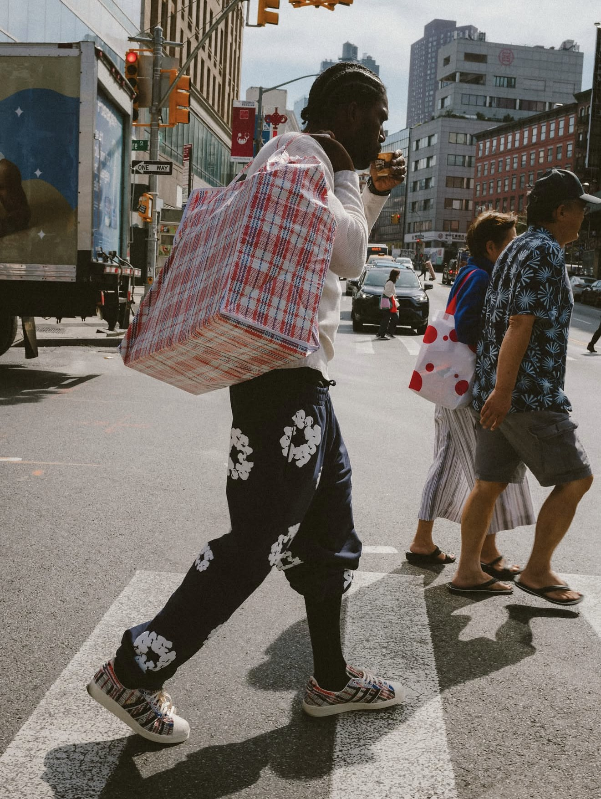
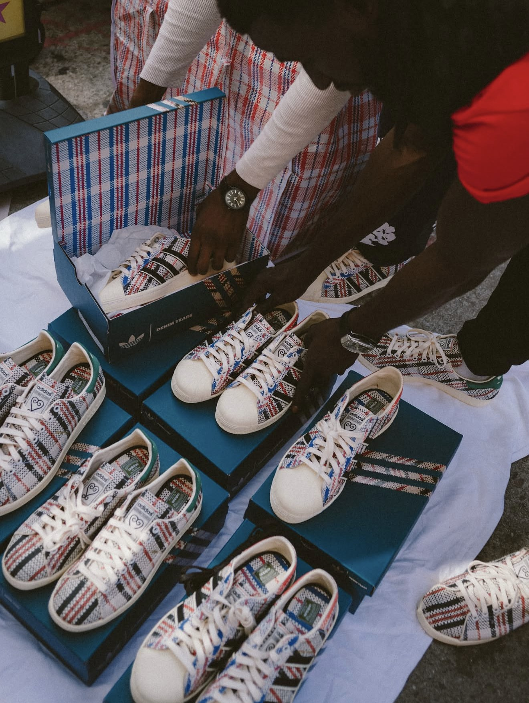
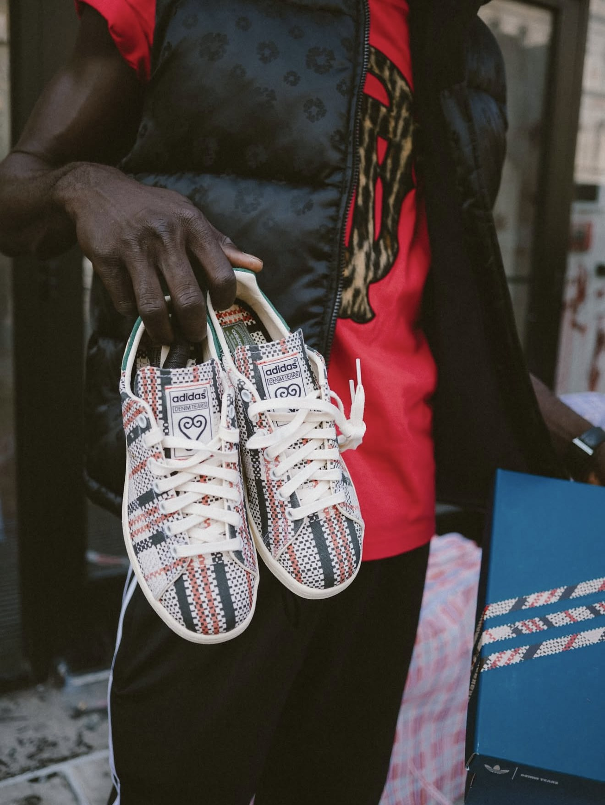

Ghana Must Go, decoded
It's the cheapest bag in the market and one of the most famous in the world. How a checked plastic tote picked up its name in 1983, and ended up on two adidas classics.

You know this bag even if you've never bought one. It's at the bus stage, strapped to the roof of a matatu, or packed under a bed with old school uniforms nobody is ready to throw away. It's checked, zipped and almost impossible to tear, and it holds far more than it looks like it should. In West Africa it has a name that tells you exactly where it has been: Ghana Must Go.
This month the same check turned up on two adidas classics, and a lot of people are only now asking where the name came from. Here's the story.
01 · The bagMade in Hong Kong, carried everywhere
Most accounts trace the bag to Hong Kong in the 1960s and 1970s. Its striped nylon canvas was first used on building sites, as temporary roofing and to cover farmland, and a Hong Kong tailor named Lee Wah is credited with turning that material into bags.
It was cheap, light and roomy, so it travelled. The bag made its way to Africa, and later to America, where African and Chinese immigrants carried it. It's still sold in stacks on New York's Canal Street today.
02 · The nameJanuary 1983, and a deadline to leave
By the early 1980s, Nigeria was home to a large population of migrants from across West Africa, many of them from Ghana. Then the economy turned. In January 1983, President Shehu Shagari ordered undocumented migrants to leave the country. Around two million people were affected, and about half of them were Ghanaian. They were given until 31 January to go.
With little time and less money, people packed whatever they could into the cheapest, strongest bags they could find and headed for home. The bags went with them across the border, and by the time it was over they had a new name. Ghana Must Go stuck, and it has never really let go.
It wasn't the first expulsion between the two countries, and it wasn't the last. In 1969, Ghana's government under Kofi Busia had pushed out large numbers of Nigerians under its Aliens Compliance Order. And in 1985, Nigeria's military ruler Muhammadu Buhari ordered another expulsion, this time of all foreigners, which forced out about 700,000 people.
03 · The afterlifeFrom the market to the runway
The name outlived the moment. Across West Africa, it's still simply what you call the bag, often without thinking about why. Elsewhere it has other lives. Louis Vuitton put the red, white and blue check on its Spring 2007 runway, and other luxury houses followed with versions that sold for hundreds of dollars. The cheapest bag in the market had become a fashion reference.
04 · The new chapterDenim Tears brings it home
Tremaine Emory, the founder of Denim Tears, has said he first noticed the pattern as a kid, on the plaid bags sold near Canal Street Station. The brand's campaign for this release was shot on Canal Street too.
Now Denim Tears has put it on the adidas Stan Smith 80 and Superstar 82. Both have cotton canvas uppers woven in the bag's red, blue, black and cream check, with cream soles. The Stan Smith keeps a green suede heel tab, and the Superstar gets its shell toe in cream.

The two pairs are the first release in a new partnership between Denim Tears and adidas Originals. They dropped on Saturday, 7 November, at African Diaspora Goods, Denim Tears' store on Spring Street in New York, at 11am New York time, which was 7pm in Nairobi. The Superstar 82 costs $180 and the Stan Smith 80 costs $160. No wider release has been announced yet.
It's a New York thing. It's a New York-inspired brand.
Tremaine Emory, to Hypebeast
05 · The symbolSankofa: go back and get it
Look at the tongue of either pair and you'll find Sankofa, an Adinkra symbol of Ghana's Akan people. The word comes from the Twi phrase san kɔfa, which means "go back and get it". It reminds you to take what's valuable from the past into the future. On the shoes it takes the form of a stylised heart, one of the symbol's two common shapes. The other is a bird looking backwards with an egg in its beak.

Put the two together and the point is hard to miss. A bag that became shorthand for being told to leave now carries a symbol that tells you to go back for what's yours. Whether a $180 sneaker can carry all of that is a fair question. But it's a better use of the pattern than most, and a lot more people now know where the name came from.
Sources
- Hypebeast: The muse for Denim Tears x adidas Originals debut? The big plaid bag (Nov 2026)
- The Source: Denim Tears and adidas Originals debut Superstar 82 and Stan Smith 80 (5 Nov 2026)
- House of Heat: Denim Tears x adidas Originals Stan Smith and Superstar release
- Graphic Online: Ghana Must Go, the ugly history of Africa's most famous bag
- GhanaWeb: Why Rawlings closed the border with Togo in 1983 after Nigeria expelled a million Ghanaians
- Kola King: Ghana Must Go, how Nigeria mass deported Ghanaians 40 years ago
- Wikipedia: Deportation of West African migrants from Nigeria
- EAUMF: 18 November 1969, Kofi Busia's government announces the Aliens Compliance Order
- Wikipedia: Red-white-blue bag
- American Historical Association, Perspectives on History: The red-white-blue bag (Apr 2026)
- Adinkra Symbols: Sankofa